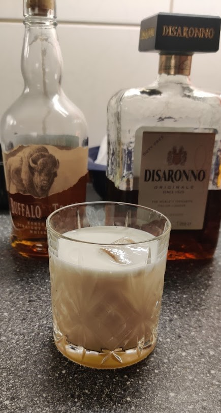

- 45 ml Amaretto
- 22.5 ml / 25-30 ml Cask Strength Bourbon/80 Proof Bourbon
- 30 ml Squeezed Lemon
- 5 ml Rich Simple Syrup
- Egg White
Garnish: Maraschino Cherry / Lemon twist / both
Process: Do a Dry Shake or Reverse Dry Shake all ingredients. Strain into glass (with ice depending on the glass).
Idea: Try a cask-strength bourbon as Morgenthaler originally specified (e.g. Booker’s)
Discovered this drink in a cocktail bar in Barcelona. Have been trying to recreate it ever since.
Modern (Morgenthaler Formula)
Difford’s remove the sirup and add slightly more (30ml) bourbon. I guess due to not using Cask-Strength bourbon.
- 45 ml Amaretto
- 22.5 ml Cask-Strength Bourbon Whiskey
- 30 ml Lemon Juice
- 1 / 15ml Egg White
- 5 ml Rich Simple Syrup
Source: Difford’s Guide (p.83), Jeffrey Morgenthaler, H2D
Classic Recipe
- 2x Amaretto
- 1x Lemon Juice
- ½x Egg White
- 1 dash Angustora Aromatic Bitters (A few more might balance the drink better according to Difford)
Process: Do a Dry Shake or Reverse Dry Shake all ingredients. Strain into glass (with ice depending on the glass).
Source: Difford’s Guide (p.83)
Sources & Inspiration
My Attempts
Attempt 3
- 45 ml Amaretto
- 25 ml Bourbon
- 30 ml Squeezed Lemon
- 5 ml Rich Simple Syrup
- Egg White
Very good.
Morgenthaler’s ratio (2.5ml more Bourbon by accident, didn’t matter. Also, I used a 45%, so I guess it’s fine with a bit more).
Attempt 2 - Maker’s Mark
- 1½ Amaretto
- 1 Bourbon
- 1 half Squeezed Lemon
- 1 tsp Rich Simple Syrup
- Egg White
The foam is way better with a real egg white.
Maybe a bit too sour ?
Idea: Try a cask-strength bourbon as Morgenthaler originally specified (e.g. Booker’s as the main man use himself)
Idea: Try Morgenthalers original ratio
Attempt 1 - Bulleit
Decent, but not overwhelming. You can taste all the ingredients, but none of them too much.
- 1½x Amaretto
- 2x Bulleit Bourbon (Increased due to Amaretto overwhelming otherwise. With a stronger bourbon this might not be necessary)
- 1.25 Lemon Juice
- 1 tsp Rich Simple Syrup